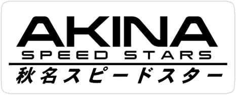
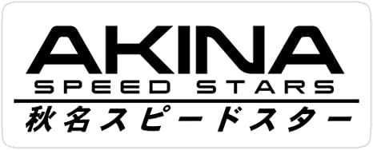

The Akina Speed Stars are a racing amateur, group, they are known as the weakest team in Gunma. Their leader, "Koichiro Iketani" is one one of the friend of Takumi Fujiwara. They are principaly at the Akina Pass, where they do races. Takumi is not an official member of the Akina Speed Stars, he sometimes do races for them, but that's all.
 

Koichiro Iketani and the Akina SpeedStars logo